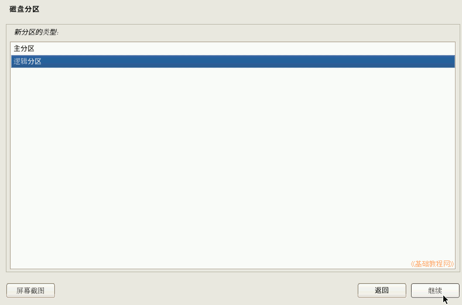
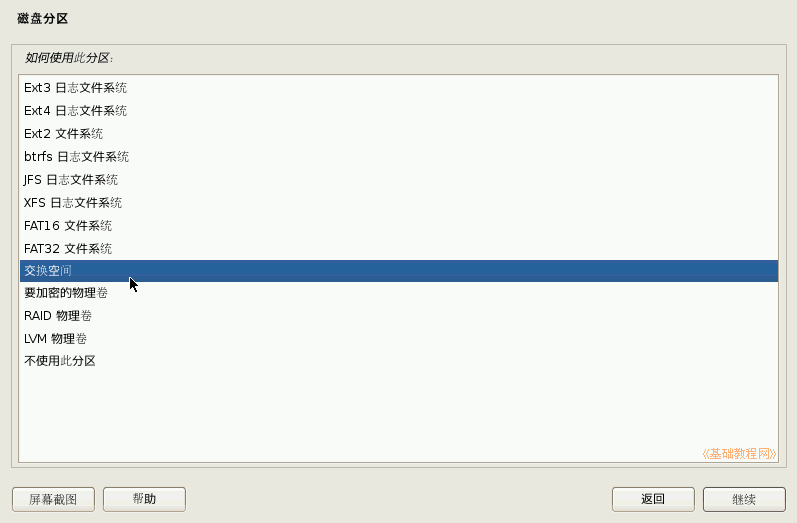

Debian 安装基础教程
作者：TeliuTe 来源：基础教程网
八、磁盘分区 返回目录 下一课这一步比较复杂，需要耐心细致；
1、磁盘分区
1）在接下来的安装步骤面板中，点“继续”按钮；
2）在分区方案面板中，选择下边的“手动”然后点“继续”按钮；
3）找到提前准备好的分区，点击选中然后点“继续”按钮；
4）如果是空闲分区，先要创建新分区，点“继续”按钮；
5）根据计划，先创建主分区，输入大小然后点“继续”按钮；
6）接下来的分区类型，单系统用主分区，双系统也可以用逻辑分区，这里选主分区，点“继续”按钮；
7）新分区的位置，直接点“继续”按钮；
8）接下来是文件系统，自动给出了设定，检查无误后选择下边的“分区设定结束”，然后点“继续”按钮，
如果要修改某一项，只要在它上面双击即可；
9）回到分区面板，选中剩下的空闲空间，点“继续”按钮；
10）接着创建新分区，点“继续”按钮；
11）分区大小，用默认的即可，剩下的全部分出来，点“继续”按钮；
12）在分区类型里选“逻辑分区”，点“继续”按钮；

13）在文件系统面板中，双击第一项“用于”，这个是要用作交换空间的；
14）在出来的列表中，选择“交换空间”然后点“继续”按钮；

15）回到文件系统面板，检查无误后，选中下边的“分区设定结束”，然后点“继续”按钮；
16）接下来是小结面板，检查一下分区信息是否正确，选择下边的“分区结束，写入磁盘”，然后点“继续”按钮；
17）接下来是确认面板，提示是否写入，选择下边的“是”，然后点“继续”按钮；
18）稍等完成分区；
本节学习了分区的基础知识，如果你成功地完成了练习，请继续学习下一课内容；
本教程由86团学校TeliuTe制作|著作权所有
基础教程网：http://teliute.org/
美丽的校园……
转载和引用本站内容，请保留作者和本站链接。